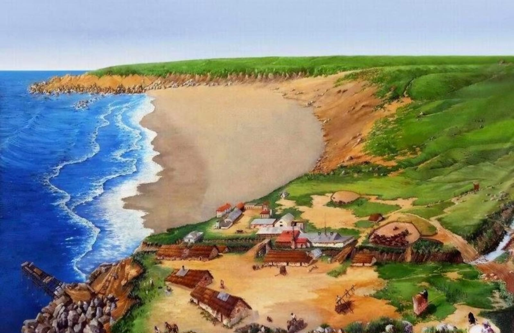
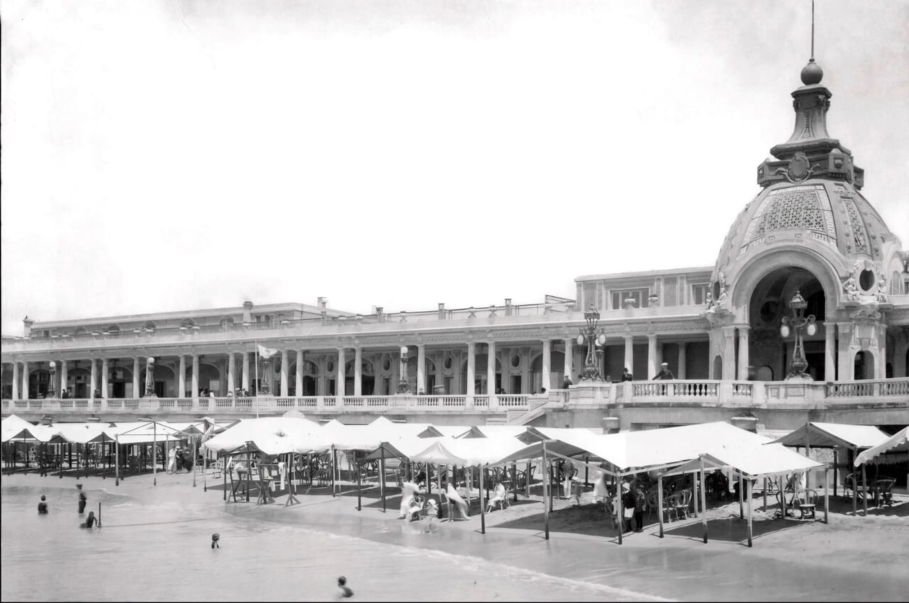
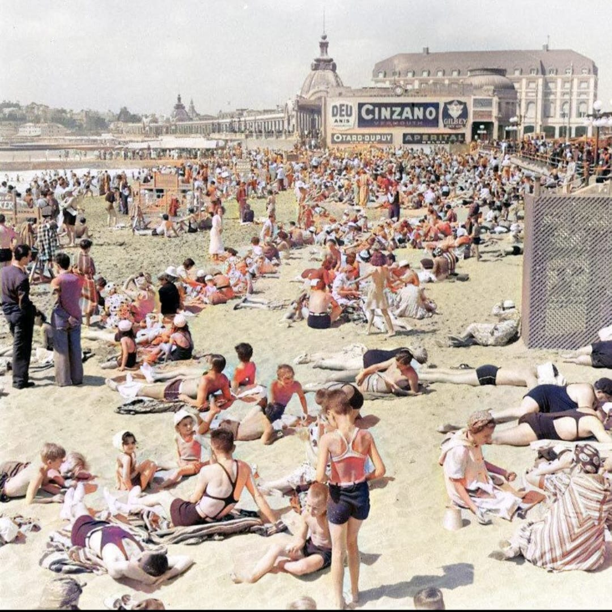
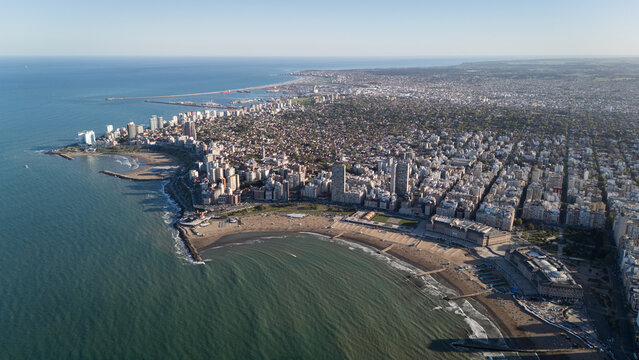

Mar del Plata
Historia y evolución de la Ciudad Feliz
Mar del Plata, apodada "La Ciudad Feliz", evolucionó de un pequeño establecimiento saladeril a convertirse en el principal balneario y puerto pesquero de Argentina. Su historia está marcada por cambios sociales que transformaron por completo su identidad arquitectónica, económica y cultural.
Su evolución histórica está marcada por tres grandes etapas: los orígenes saladeriles, el refugio exclusivo de la aristocracia (la "Biarritz argentina") y, finalmente, la capital del turismo de masas.
De la "Muy Galana Costa" a la Fundación
Antes de ser ciudad, la región estaba habitada por pueblos originarios nómades, principalmente pampas y tehuelches. En 1581, el explorador Juan de Garay recorrió la zona y la bautizó como una "muy galana costa".
Fundación y desarrollo inicial
El Saladero
En 1856, un consorcio liderado por el portugués José Coelho de Meyrelles instaló un saladero de carne en la desembocadura del Arroyo Las Chacras. Tras su declive económico, las tierras fueron adquiridas por Patricio Peralta Ramos.
Nacimiento oficial
El 10 de febrero de 1874, mediante un decreto del gobierno provincial, Patricio Peralta Ramos fundó oficialmente el pueblo, bautizándolo "Mar del Plata".

La "Biarritz Argentina" (1880 - 1930)
Llegada del ferrocarril (1886)
La llegada del tren desde Buenos Aires, impulsada por Pedro Luro, fue el punto de inflexión para el desarrollo demográfico y turístico.
Balneario aristocrático
Mar del Plata se transformó en el destino de verano exclusivo de la alta sociedad porteña. Se construyeron majestuosos chalets, la icónica Rambla Bristol y el lujoso Bristol Hotel, emulando la arquitectura y las costumbres de la Belle Époque europea.

El Turismo de Masas (1940 - 1970)
Democratización del ocio
Con la implementación de las vacaciones pagas y las políticas laborales de la década de 1940, la ciudad experimentó un cambio radical.
Hoteles sindicales
Diferentes gremios compraron y construyeron hoteles, permitiendo que millones de trabajadores y familias de clase media veranearan en la costa.
Transformación arquitectónica
La Ley de Propiedad Horizontal (1948) impulsó un boom de la construcción. Decenas de antiguos chalets fueron demolidos para dar paso a altos edificios de departamentos, configurando el paisaje vertical que caracteriza al centro hoy en día.

La Ciudad Moderna
En la actualidad, Mar del Plata trasciende su rol de destino veraniego. Posee el principal puerto pesquero de la Argentina, un pujante sector industrial textil y cordón frutihortícola, además de ser un importante centro universitario y cultural que mantiene su vitalidad durante todo el año.
